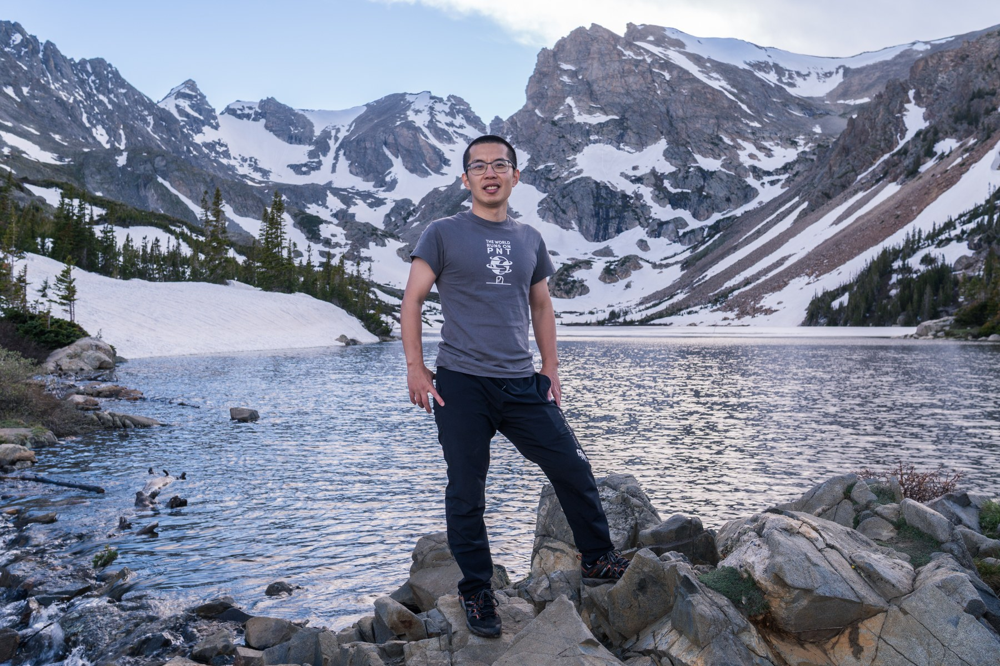

刘磊
武汉大学测绘学院教授 · 博士生导师
刘磊 武汉大学测绘学院教授，博士生导师，国家级海外高层次青年引进人才。2020年获武汉大学博士学位，曾先后在美国科罗拉多大学博尔德分校、美国密歇根大学安娜堡分校担任博士后/副研究员、研究员职位，长期从事北斗/GNSS电离层空间环境监测、低轨导航增强、机器学习在GNSS 遥感的创新应用等领域研究。承担/参与NASA、NOAA、NSF等重大科研项目，在地学领域权威期刊等发表学术论文30余篇（多篇入选高被引论文），相关成果在国内外规模化推广应用，曾获教育部科学技术进步奖一等奖。担任全球大地测量观测系统(GGOS)工作组副主席、GPS Solutions（一区Top）期刊编委、Space Weather（二区Top）期刊副主编、IEEE JSTARS专刊客座主编、美国ION年会(导航定位领域顶级国际会议)分论坛主席、国际会议IEEE IGARSS分论坛主席等10余项学术职务。
武汉大学 · 测绘学院

研究方向
空间天气对 GNSS PNT 服务的影响评估
机器学习在GNSS 遥感的创新应用
GNSS 掩星、反射测量与电离层闪烁分析
强地磁暴、太阳耀斑与极端事件的电离层响应
学术论文
Cascaded transformer-LSTM architecture for urban canyon navigation with factor graph optimization
H. Zhang, W. Luo, M. Peng, J. Kong, L. Liu, Y. Yao, C. Xu, F. Tang, J. Pan
GPS Solutions, 2026Rapid evolution of super equatorial plasma bubbles and X-pattern EIA formation during extreme storm conditions on 12 November 2025
S. Zou, L. Liu, H. Liu, A. Coster, R. Kerr, J. Souza, A. Santos
Geophysical Research Letters, 2026Detection of traveling ionospheric disturbances triggered by 2022 Tonga volcanic eruptions through CubeSats coherent GNSS-reflectometry measurement
P.-H. Cheng, Y. Wang, L. Liu, Y. J. Morton
Journal of Geophysical Research: Space Physics, 2024展开其余学术论文
Assessment of storm-time ionospheric electron density measurements from Spire global CubeSat GNSS radio occultation constellation
L. Liu, Y. J. Morton
GPS Solutions, 2023Concentric traveling ionospheric disturbances (CTID) triggered by the 2022 Tonga volcanic eruption
L. Liu, Y. J. Morton, P.-H. Cheng, A. Amores, C. J. Wright, L. Hoffmann
Journal of Geophysical Research: Space Physics, 2023ML prediction of global ionospheric TEC maps
L. Liu, Y. J. Morton, Y. Liu
Space Weather, 2022Machine learning prediction of storm-time high-latitude ionospheric irregularities from GNSS-derived ROTI maps
L. Liu, Y. J. Morton, Y. Liu
Geophysical Research Letters, 2021Arctic TEC mapping using integrated LEO-based GNSS-R and ground-based GNSS observations: A simulation study
L. Liu, Y. J. Morton, Y. Wang, K.-B. Wu
IEEE Transactions on Geoscience and Remote Sensing, 2021Hemispheric asymmetries in the mid-latitude ionosphere during the September 7-8, 2017 storm: Multi-instrument observations
Z. Wang, S. Zou, L. Liu, J. Ren, E. Aa
Journal of Geophysical Research: Space Physics, 2021Coordinated ground-based and space-borne observations of ionospheric response to the annular solar eclipse on 26 December 2019
E. Aa, S.-R. Zhang, P. J. Erickson, L. P. Goncharenko, A. J. Coster, O. F. Jonah, J. Lei, F. Huang, T. Dang, L. Liu
Journal of Geophysical Research: Space Physics, 2020Improved IRI-2016 model based on BeiDou GEO TEC ingestion across China
M. Chen, L. Liu, C. Xu, Y. Wang
GPS Solutions, 2020Multi-instrumental observations of early morning equatorial plasma depletions during the 2017 Memorial Weekend storm
L. Liu, Y. Yao, E. Aa
IEEE Journal of Selected Topics in Applied Earth Observations and Remote Sensing, 2020Multi-scale ionosphere responses to the May 2017 magnetic storm over the Asian sector
L. Liu, S. Zou, Y. Yao, E. Aa
GPS Solutions, 2020Forecasting global ionospheric TEC using deep learning approach
L. Liu, S. Zou, Y. Yao, Z. Wang
Space Weather, 2020An updated experimental model of IG indices over the Antarctic region via the assimilation of IRI-2016 with GNSS TEC
Y. Yao, X. Chen, J. Kong, C. Zhou, L. Liu, L. Shan, Z. Guo
IEEE Transactions on Geoscience and Remote Sensing, 2020Ingestion of GIM-derived TEC data for updating IRI-2016 driven by effective IG indices over the European region
L. Liu, Y. Yao, S. Zou, J. Kong, L. Shan, C. Zhai, C. Zhao, Y. Wang
Journal of Geodesy, 2019Tridimensional reconstruction of the co-seismic ionospheric disturbance around the time of 2015 Nepal earthquake
J. Kong, Y. Yao, C. Zhou, Y. Liu, C. Zhai, Z. Wang, L. Liu
Journal of Geodesy, 2018Plasmaspheric electron content inferred from residuals between GNSS-derived and TOPEX/JASON vertical TEC data
L. Liu, Y. Yao, J. Kong, L. Shan
Remote Sensing, 2018Global ionospheric modeling based on multi-GNSS, satellite altimetry, and Formosat-3/COSMIC data
Y. Yao, L. Liu, J. Kong, C. Zhai
GPS Solutions, 2018A clear link connecting the troposphere and ionosphere: Ionospheric responses to the 2015 Typhoon Dujuan
J. Kong, Y. Yao, Y. Xu, C. Kuo, L. Zhang, L. Liu, C. Zhai
Journal of Geodesy, 2017Estimation of BDS DCB combining GIM and different zero-mean constraints
Y. Yao, L. Liu, J. Kong, F. Xinying
Acta Geodaetica et Cartographica Sinica, 2017Contribution of solar radiation and geomagnetic activity to global structure of 27-day variation of ionosphere
Y. Yao, C. Zhai, J. Kong, L. Liu
Journal of Geodesy, 2017A new computerized ionosphere tomography model using the mapping function and an application to the study of seismic-ionosphere disturbance
J. Kong, Y. Yao, L. Liu, C. Zhai, Z. Wang
Journal of Geodesy, 2016Analysis of the global ionospheric disturbances of the March 2015 great storm
Y. Yao, L. Liu, J. Kong, C. Zhai
Journal of Geophysical Research: Space Physics, 2016The pre-earthquake ionosphere anomaly of the 2015 Nepal earthquake
Y. Yao, C. Zhai, J. Kong, L. Liu
Acta Geodaetica et Cartographica Sinica, 2016教育与经历
Wuhan University, China
测绘学院教授、博士生导师
University of Michigan Ann Arbor, US
气候与空间科学工程系 Research Fellow；导师：Dr. Shasha Zou
University of Colorado Boulder, US
航空航天工程科学系 Postdoctoral Researcher、Research Associate/Affiliate；导师：Dr. Jade Morton
University of Michigan Ann Arbor, US
气候与空间科学工程系访问博士生；导师：Dr. Shasha Zou
Wuhan University, China
大地测量学与测量工程硕士、博士；导师：Dr. Yibin Yao
Central South University of Forestry and Technology, China
测绘工程学士
科研项目
NASA CDP: Spire GNSS RO Data for Ionospheric Scintillation Investigation
NOAA CDP: NOAA Space Weather Data Pilot Program
NASA: GeoOptics GNSS Data for Space Weather Science and Beyond
NASA CSDA: Spire GNSS Radio Occultation Measurement Analysis
DARPA: Heliosphere to Earth Atmosphere Rendering Through Building Excellent Artificial-intelligence Training
NASA: Utilizing GNSS-R Measurements for High-latitude Ionospheric TEC Mapping
学术任职
期刊编辑
GPS Solutions（一区 Top）编委
Space Weather（AGU，二区 Top）副主编
IEEE JSTARS（二区）专刊客座主编
Frontiers in Astronomy and Space Sciences 编委
Geomatics 编委
国际学术组织与会议服务
国际大地测量学协会（IAG，全球大地测量科学的核心学术组织）工作组委员
全球大地测量观测系统（GGOS，IAG 领导的核心项目）工作组副主席
美国 ION GNSS+（导航定位领域顶级国际会议）分论坛主席
IEEE IGARSS（全球遥感领域顶级会议）分论坛主席
AOGS（亚洲及大洋洲地区最具影响力的会议之一）分论坛召集人
期刊审稿
联系与学术主页
欢迎就北斗/GNSS电离层空间环境监测、低轨导航增强、GNSS遥感与机器学习应用开展学术交流和合作。